스케이트보드의 역사 Sk8 history
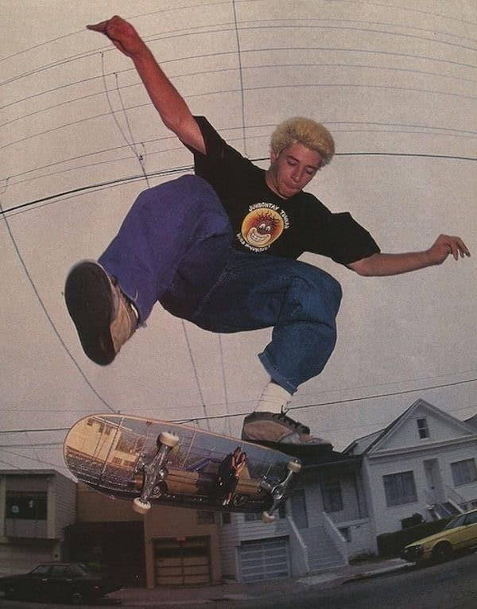스케이트보드의 시초는 1940년대 캘리포니아의 서퍼들이 파도가 없는 날에도 보드를 즐기고 싶은 마음에 서핑보드에 롤러스케이트 바퀴를 달아 타면서 생겨났다. 스케이트보드는 주행과 기술을 포함하는 액션스포츠이다. 2009년에는 전세계 스케이트보드 시장은 매년 50억가량의 수익을 내며, 약 천만명의 스케이트보더 활발히 활동하고있다고 조사되었다. 2016년에는 2020 도쿄 올림픽 종목으로 채택 되기도 하였다.
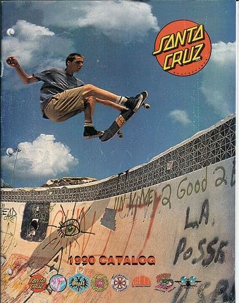
스케이트보드의 종류 Type of sk8
스케이트보드는 크기와 모양에 따라서 크게 스탠다드 스케이트보드, 롱보드, 크루져보드 3가지로 나뉘어진다. 그외에 지형이 험한 곳에서 타기 위한 마운틴보드나 서핑과 유사한 랜드서핑보드 등이 있다.
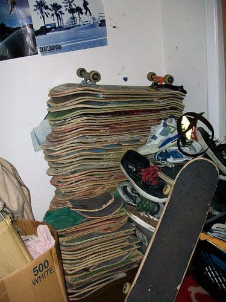
스케이트보드와 패션 Fashion with sk8
슈프림
슈프림은 1994년 뉴욕 맨하탄에서 영국계 미국인 제임스 제비아가 스케이트보드 문화와 힙합 문화에 영향을 받아 런칭하였다. 슈프림에서는 각종 스케이트 보드관련 장비를 발매하며 보더들이 스케이트보드를 타고 들어올 수 있도록 매장에 문턱을 만들지 않았다고 한다.
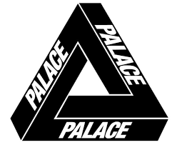
팔라스 스케이트보드
팔라스 스케이트보드는 2010년 레프 탄주와 친구들이 스케이트를 타고싶은 만큼 돈을 벌고 싶어 만든 브랜드이다. 영국 런던을 기반으로 한 팔라스는 제2의 슈프림이라 불리기도 하며 축구 유니폼 스타일이 특징이다.
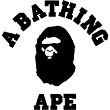
베이프
1993년 일본 하라주쿠를 기반으로 일본의 DJ이자 프로듀서인 니고가 설립한 하이엔드 스트릿 브랜드. 미국의 스트릿 브랜드의 힙합, 펑크, 스케이트보드 문화를 하라주쿠 스타일로 풀어낸 베이프는 일본 현지는 물론이고 북미, 유럽에서도 광범위한 인기를 얻고 있다. 칸예 웨스트와 에이셉 라키가 즐겨입는다고한다.
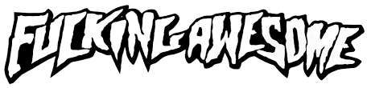
퍼킹어썸
퍼킹어썸은 슈프림의 모델로 유명한 프로 스케이터 제이슨 딜이 직접 디렉터로 있는 브랜드다. 작년 중순 LA에 첫 플래그십스토어를 오픈하기도 하였다.
반스와 스케이트보드 Vans
반스는 1966년 미국 캘리포니아에서 처음 런칭되었다. 1970년대에 들어서면서 튼튼한 내구성과 쫀쫀한 밑창으로 많은 보더들의 사랑을 받았다. 많은 스케이트 보더들이 반스를 신고 스케이트를 타며, 그들의 피드백을 받아 반스는 발전하였다. 보드 경연에 참가자들 대부분이 반스 어센틱을 신고 나오며 반스 어센틱은 보드만큼 상징적으로 자리잡았다.
1960년대 말 베트남전쟁의 후유증으로 사회의 불만을 가진 미국의 10대들은 직접 거리에 나와 베트남 전쟁 반대운동을 펼쳤는데, 이때 반항 문화 중 하나가 스케이트 보드였다. 그들은 보드를 잘 타는 이에게 "Did you see that guy get off the wall!" 라며 감탄했고, 여기에서 영향을 받아 반스의 슬로건인 OFF THE WALL이 탄생한다.
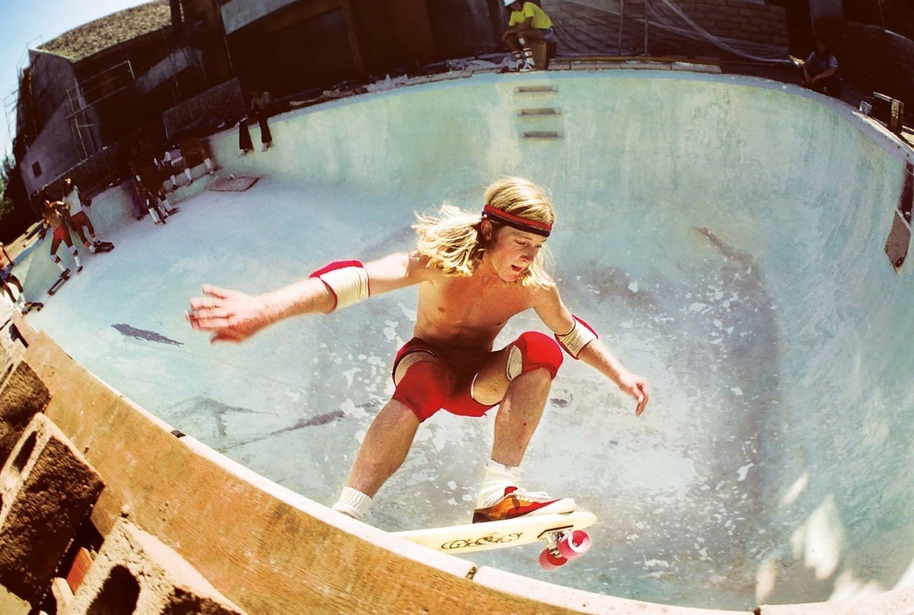
이후 10대들의 우상과도 같았던 스케이트 보더 스테이시 페럴타를 모델로 기용하며 반스는 완벽한 스케이트 보드 슈즈의 대명사로 자리잡는다.
스케이트 필르머 Sk8 filmer
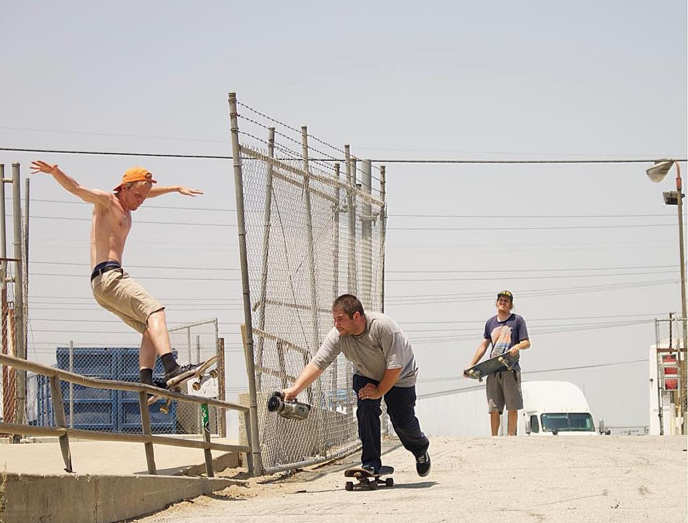스케이터들에게 비디오 영상은 래퍼들의 믹스테잎 같은 개념이다. 자신의 스케이팅 영상을 공유하는것은 스케이터들에게 매우 중요한 요소이다.영화감독 스파이크 존즈는 스케이트보드 필름을 찍다가 감독으로 데뷔하였다.
스케이트보드 매거진 Sk8 magazine
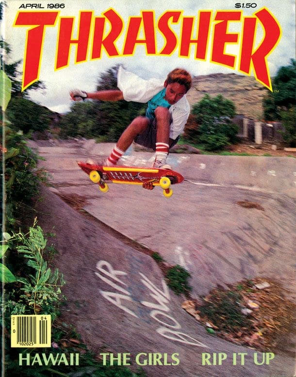https://www.thrashermagazine.com/
https://www.freeskatemag.com/
https://skateboarding.transworld.net/
https://greyskatemag.com/
https://juicemagazine.com/
https://kingskatemag.com/
스케이트보드와 음악 Music with sk8
1970년대 영미권을 중심으로 펑크락과 하드코어 메탈이 인기를 얻게 되며 스케이트보더들도 이 음악들을 즐겨듣게된다. 90년대에는 아예 스케이트펑크라는 장르가 등장하기도 한다.스케이트보드 매거진 또한 펑크나 하드코어 씬을 통해 유통되었다.
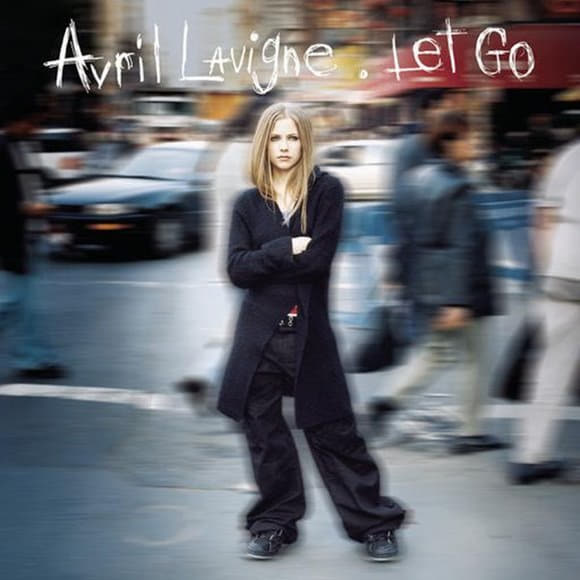
Sk8er Boi
2002년 에이브릴라빈이 17살에 낸 첫 앨범 Let Go의 수록곡으로 스케이트를 타던 소년과 발레를 하던 소녀의 이야기가 담긴 가사이다. 이 앨범은 UK차트 1위 빌보드 2위와 동시에 전세계적으로 1700만 장 이상의 판매고를 올리며 엄청난 상업적 성공을 거두었고 전세계적으로 신드롬을 일으켰다. 펑크 기타 사운드를 섞은 팝송 싱글 Sk8er Boi는 많은 아티스트들이 커버하기도 했다.
스케이트보드와 영화 Movie with sk8
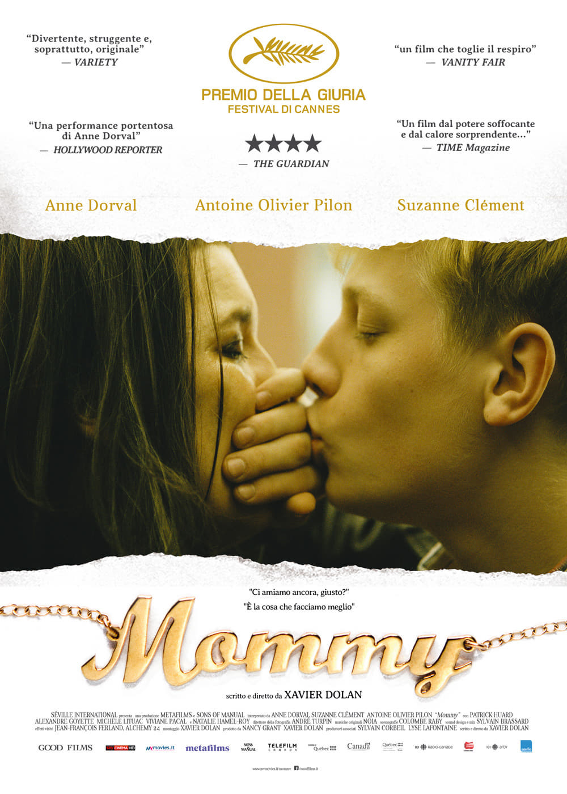
영화 <마미> , 2014
"우리가 제일 잘하는 게 사랑이잖아."
결핍으로 가득 찬 세 사람이 만나 하나의 소우주를 구성할 때,
그들의 세상은 비로소 시작된다.
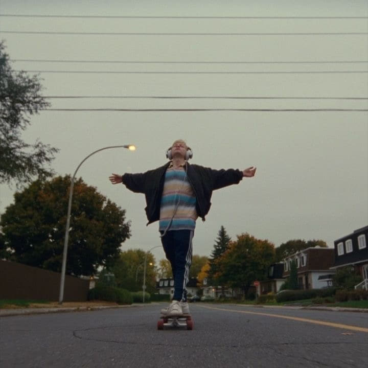
(주인공 스티브는 스케이트보드를 탈 때 가장 자유로워보인다.)
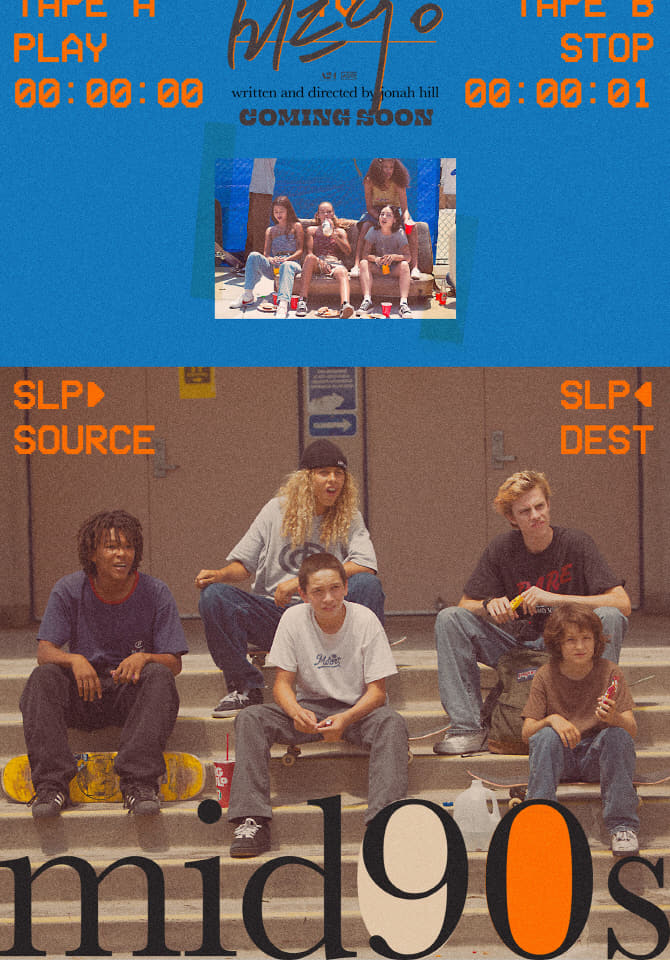
영화 <미드90> , 2018
누군가의 인생을 바꿀 우리 모두의 끝내주는 VHS TAPE
1990년대, LA. 스티비의 여름은 처음으로 뜨겁고 자유롭다.
그에게는 넘어져도 좋은 스케이트보드, 그리고 함께 일어서는 나쁜 친구들이 있다.
배우 출신으로 잘 알려져 있는 조나 힐 감독은 자신의 첫 장편영화를 통해 1990년대 로스앤젤레스 10대 소년을 따라간다. 열세 살 스티비는 집안에서 제대로 돌보아 주는 이가 없다. 그런데, 우연히 스케이트장에서 만난 새로운 친구들은 자신을 놀리기도 하지만, 애정을 갖고 대해준다. 스티비는 점점 이들과 어울리면서 성인 흉내를 내기도 하다. 평범한 듯 보이지만 특별한 성장과정을 조나 힐은 인종이 어울리고, 취향이 뒤섞이면서 어떻게 존중받게 되는가를 설득력 있게 묘사해 내고 있다. (2019년 제20회 전주국제영화제/이상용)
국내 스케이트보드 domestic market
국내 스케이트보드 시장은 점점 커지는 추세이다. sns를 통해 롱보드가 인기를 타며 최근에는 롱보드 인구가 늘었다고 한다. 스케이트 보드 타기에 적합한 장소를 스팟이라고 부르는데 우리나라에선 보라매공원, 동대문 훈련원 공원, 뚝섬 스케이트파크 등이 있다. 수도권 이외의 대구에 두류공원, 부산에 사직운동장이 대표적이다. 새로운 취미를 찾고있다면 스케이트보드에 도전해보기를 추천한다.
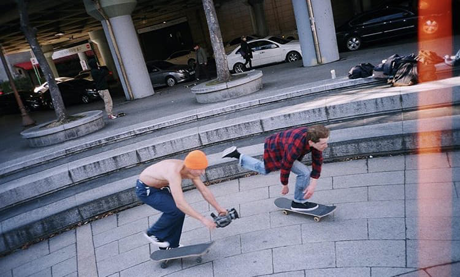
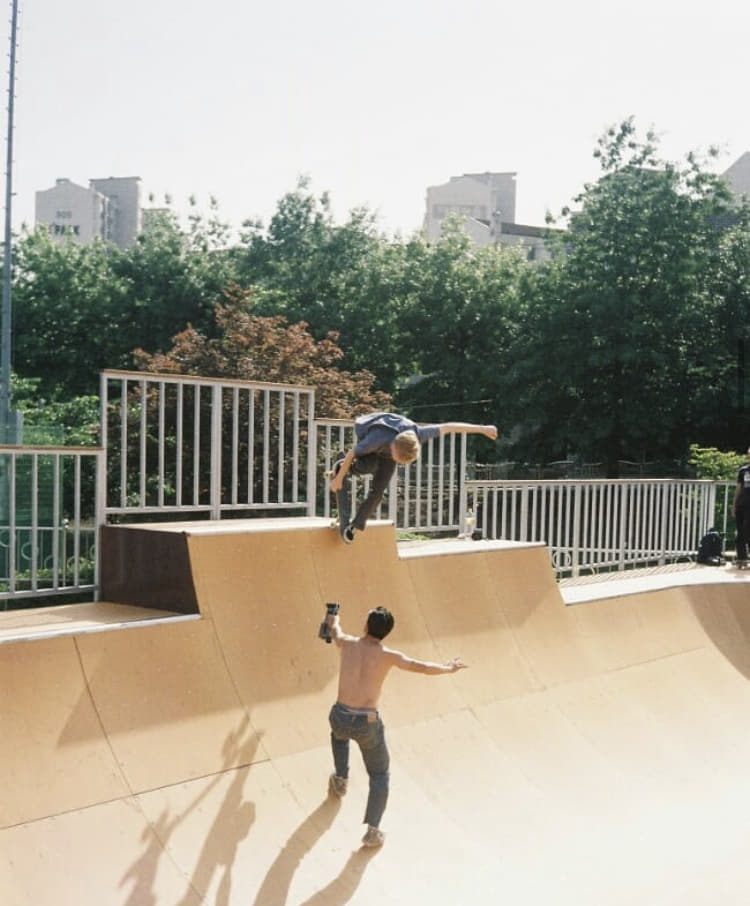